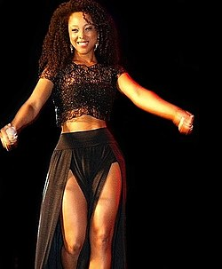

Negra Li
Liliane de Carvalho, conhecida como Negra Li, é cantora, compositora e atriz brasileira, nascida em 17 de setembro de 1979 na cidade de São Paulo. É uma das artistas negras mais influentes da música brasileira contemporânea, com uma carreira marcada pela fusão de rap, R&B e MPB.
Biografia
Negra Li cresceu na zona norte de São Paulo e iniciou sua carreira artística ainda na adolescência. Ganhou destaque como integrante do grupo de rap RZO (Rapaziada da Zona Oeste), onde começou a mostrar seu talento vocal e presença de palco.
Com o tempo, seguiu carreira solo, alcançando reconhecimento nacional ao abordar temas como empoderamento feminino, racismo, amor e superação, sempre com uma forte identidade musical.
Resumo da Carreira
Após sua saída do RZO, Negra Li lançou álbuns solo e participou de projetos diversos. Um dos momentos de maior destaque foi a música "Você Vai Estar na Minha", em parceria com Charlie Brown Jr., que se tornou um grande sucesso no Brasil.
Além da música, Negra Li também atuou como atriz, participando de filmes como "Antônia", longa-metragem que deu origem a uma série homônima da TV Globo. A produção retratava a vida de quatro mulheres da periferia que lutavam para seguir a carreira musical.
Negra Li também é uma voz ativa na luta por igualdade racial e de gênero, usando sua arte como ferramenta de conscientização e transformação social.
Músicas de Sucesso
- Você Vai Estar na Minha (com Charlie Brown Jr.)
- Guerreiro, Guerreira
- Não É Sério
- Sunshine
- Hoje Eu Só Quero Ser Feliz
Curiosidades
• Primeira mulher negra a alcançar notoriedade no rap nacional
• Atuou como protagonista em filme e série de TV
• Participou de trilhas sonoras de novelas
• Uma das pioneiras na mistura de rap com MPB e soul